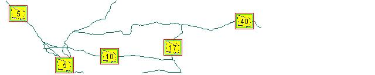

|
|||||||||||
| PREV CLASS NEXT CLASS | FRAMES NO FRAMES | ||||||||||
| SUMMARY: NESTED | FIELD | CONSTR | METHOD | DETAIL: FIELD | CONSTR | METHOD | ||||||||||
java.lang.Object
|
+--com.esri.mo2.map.draw.BaseSymbol
|
+--com.esri.mo2.map.draw.BaseFontSymbol
|
+--com.esri.mo2.map.draw.BaseTextSymbol
|
+--com.esri.mo2.map.draw.RasterShieldSymbol
This symbol is used for drawing highway shields with a specified background image.
The symbol supports the following attributes:
RasterShieldSymbol ssSymbol = new RasterShieldSymbol;

spSymbol.setImageString("c:/temp/shield.gif");
| Field Summary | |
static boolean |
DEFAULT_BOUNDARY
This constant defines the default boundary. |
static URL |
DEFAULT_IMAGEURL
This constant defines the default image url. |
static int |
DEFAULT_LABELMODE
This constant defines the default value for labelmode. |
static int |
DEFAULT_PRINTMODE
This constant defines the default value for printmode. |
static int |
DEFAULT_TEXTPOSITION_X
This constant defines the default X textposition. |
static int |
DEFAULT_TEXTPOSITION_Y
This constant defines the default Y textposition. |
| Fields inherited from class com.esri.mo2.map.draw.BaseFontSymbol |
DEFAULT_BLOCKOUT, DEFAULT_COLOR, DEFAULT_FONT, DEFAULT_GLOWING, DEFAULT_OUTLINE, DEFAULT_SHADOW, LABELMODE_FULL, LABELMODE_NUMERICONLY, PRINTMODE_ALLOWER, PRINTMODE_ALLUPPER, PRINTMODE_NONE, PRINTMODE_PRETTYPRINT, PRINTMODE_TITLECAPS |
| Fields inherited from class com.esri.mo2.map.draw.BaseSymbol |
DEFAULT_ANTIALIASING, DEFAULT_TRANSPARENCY |
| Constructor Summary | |
RasterShieldSymbol()
|
|
| Method Summary | |
void |
draw(String text,
double x,
double y,
double angle,
Graphics2D g2,
FeatureGeometry fg)
This method is called by a label engine to render a label. |
boolean |
getBoundary()
Obtains the boundary value. |
Image |
getImage()
Obtains the image object. |
String |
getImageString()
Obtains the name of image. |
int |
getLabelMode()
Obtains the labelmode value. |
int |
getPrintMode()
Obtains the value of printmode. |
int[] |
getRotationalAngles()
The method returns the integer array of rotational angles. |
String |
getRotationalAnglesAsString()
The method return the string representation of rotation angles list. |
int |
getTextPositionX()
Obtains the X text position |
int |
getTextPositionY()
Obtains the Y text position |
String |
getUrlString()
Obtains the Url string. |
void |
prepare(String text,
FeatureGeometry fg,
Transform transform)
This method provide the parameters for drawing. |
void |
setBoundary(boolean boundary)
Set boundary value. |
void |
setImageString(String imagestring)
Sets the name of image, format can be either GIF, JPEG or PNG. |
void |
setLabelMode(int labelmode)
Sets the labelmode value. |
void |
setPrintMode(int printmode)
Sets printmode value. |
void |
setTextPositionX(int textpositionx)
Sets X text position. |
void |
setTextPositionY(int textpositiony)
Sets Y text position. |
void |
setUrlString(String urlstring)
Sets Url string, format can be either GIF, JPEG or PNG. |
| Methods inherited from class com.esri.mo2.map.draw.BaseTextSymbol |
draw, getFeatureWeight, getHowManyLabels, getLabelBufferRatio, getLabelPriorities, getLabelPrioritiesAsString, getLabelWeight, getLineLabelPosition, setFeatureWeight, setHowManyLabels, setLabelBufferRatio, setLabelPriorities, setLabelWeight, setLineLabelPosition, setRotationalAngles |
| Methods inherited from class com.esri.mo2.map.draw.BaseFontSymbol |
drawTextWithEffect, getBlockOut, getColor, getFont, getGlowing, getMaximumSymbolSize, getOutline, getShadow, getSizeTextWithEffect, intToStringLabelMode, intToStringPrintMode, intToStringStyle, setBlockOut, setColor, setFont, setGlowing, setOutline, setShadow, stringToIntLabelMode, stringToIntPrintMode, stringToIntStyle, stringToNewMode |
| Methods inherited from class com.esri.mo2.map.draw.BaseSymbol |
CalcCentroid, clone, filterShadowImage, filterTransparentImage, getAntialiasing, getFieldCount, getFieldName, getRenderer, getTransparency, hasTransparency, setAntialiasing, setRenderer, setTransparency, switchTransform |
| Methods inherited from class java.lang.Object |
equals, finalize, getClass, hashCode, notify, notifyAll, toString, wait, wait, wait |
| Methods inherited from interface com.esri.mo2.map.draw.TextSymbol |
getBlockOut, getColor, getFont, getGlowing, getOutline, getShadow, setBlockOut, setColor, setFont, setGlowing, setOutline, setShadow |
| Methods inherited from interface com.esri.mo2.map.draw.Symbol |
clone, getAntialiasing, getFieldCount, getFieldName, getRenderer, getTransparency, hasTransparency, setAntialiasing, setRenderer, setTransparency |
| Field Detail |
public static final URL DEFAULT_IMAGEURL
public static final int DEFAULT_PRINTMODE
BaseFontSymbol.PRINTMODE_NONE,
Constant Field Valuespublic static final int DEFAULT_LABELMODE
BaseFontSymbol.LABELMODE_NUMERICONLY,
Constant Field Valuespublic static final int DEFAULT_TEXTPOSITION_X
public static final int DEFAULT_TEXTPOSITION_Y
public static final boolean DEFAULT_BOUNDARY
| Constructor Detail |
public RasterShieldSymbol()
| Method Detail |
public void prepare(String text,
FeatureGeometry fg,
Transform transform)
text - is a textstring to be drawingfg - is feature geometry to be labeledtransform - is transform object to describe the current map transformTextSymbol.prepare(java.lang.String, com.esri.mo2.cs.geom.FeatureGeometry, com.esri.mo2.cs.geom.Transform)
public void draw(String text,
double x,
double y,
double angle,
Graphics2D g2,
FeatureGeometry fg)
text - the label textx - the x coordinate locationy - the y coordinate locationangle - the angleg2 - the graphic contextfg - the feature locationTextSymbol.draw(java.lang.String, double, double, double, java.awt.Graphics2D, com.esri.mo2.cs.geom.FeatureGeometry)public int[] getRotationalAngles()
getRotationalAngles in interface TextSymbolgetRotationalAngles in class BaseTextSymbolTextSymbol.setLabelPriorities(java.lang.String)public String getRotationalAnglesAsString()
getRotationalAnglesAsString in interface TextSymbolgetRotationalAnglesAsString in class BaseTextSymbolpublic void setPrintMode(int printmode)
printmode - is a printmodeBaseFontSymbol.PRINTMODE_NONE,
BaseFontSymbol.PRINTMODE_PRETTYPRINT,
BaseFontSymbol.PRINTMODE_TITLECAPS,
BaseFontSymbol.PRINTMODE_ALLUPPER,
BaseFontSymbol.PRINTMODE_ALLOWERpublic int getPrintMode()
setPrintMode(int)public void setLabelMode(int labelmode)
labelmode - is a labelmodeBaseFontSymbol.LABELMODE_FULL,
BaseFontSymbol.LABELMODE_NUMERICONLYpublic int getLabelMode()
setLabelMode(int)public void setTextPositionX(int textpositionx)
textpositionx - is X coordinatepublic int getTextPositionX()
public void setTextPositionY(int textpositiony)
textpositiony - is Y coordinatepublic int getTextPositionY()
public void setBoundary(boolean boundary)
boundary - is boundry valuepublic boolean getBoundary()
public void setImageString(String imagestring)
imagestring - path to the image can be nullpublic String getImageString()
public void setUrlString(String urlstring)
urlstring - path to the image can be nullpublic String getUrlString()
public Image getImage()
|
|||||||||||
| PREV CLASS NEXT CLASS | FRAMES NO FRAMES | ||||||||||
| SUMMARY: NESTED | FIELD | CONSTR | METHOD | DETAIL: FIELD | CONSTR | METHOD | ||||||||||